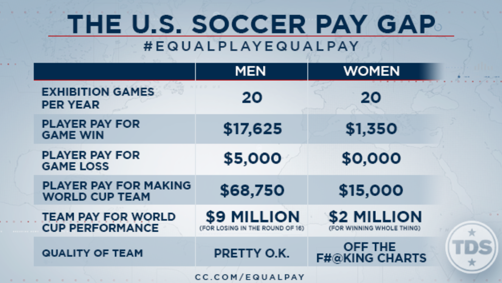

$TAT$

The United States Womens's soccer team only gets paid when they
win a match. The Men's team gets paid regardless

The soccer team is able to be compared to the mens team.
They're good, if not better. But discriminations faces them evryday.
The Womens World Cup draws better ratings than last years mens final ,
even as equal pay debate rages on. Why should they get paid less when they
not only won 4 World Cups but also, from a capitalist perspective, receive higher
better ratings?

This past 2019 Women's Fifa Cup the womens team won all their games
and eventually won the world cup, making it their fourth.
They are truly unmatched to any other team including the U.s Men's team